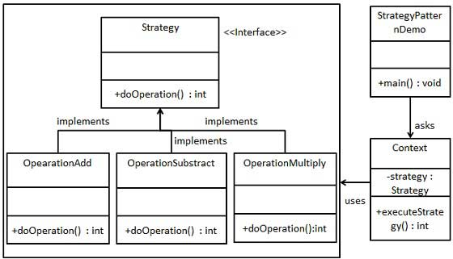

Strategy Pattern
In the Strategy Pattern, a class's behavior or its algorithm can be changed at runtime. This type of design pattern belongs to the behavioral pattern category.
The Strategy Pattern defines a series of algorithms or strategies, and encapsulates each algorithm in an independent class, allowing them to be interchangeable. By using the Strategy Pattern, different algorithms can be selected at runtime as needed without modifying client code.
In the strategy pattern, we create objects representing various strategies and a context object whose behavior changes as the strategy object changes. The strategy object changes the execution algorithm of the context object.
Introduction
intent
Encapsulate each algorithm so that they can be used interchangeably.
Main problems solved
- Solve the problem of complexity and difficulty in maintenance caused by using conditional statements (such as if...else) when multiple similar algorithms exist.
Use Case
- When there are many classes in a system, and the only difference between them is their behavior.
Implementation Approach
- Define the strategy interface: All strategy classes will implement this unified interface.
- Create concrete strategy classes: Each strategy class encapsulates a specific algorithm or behavior.
- Context Class: Contains a reference to a strategy object and invokes the strategy through that reference.
Key code
- Strategy Interface: Specifies the methods that all strategy classes must implement.
- Concrete Strategy class: Implements the strategy interface and contains the concrete algorithm implementation.
Application example
- Clever Stratagem: Each wisdom bag represents a strategy, containing a different plan.
- Travel mode selection: Riding a bicycle, taking a car, etc. Each mode is a replaceable strategy.
- Java AWT's LayoutManager: Different layout managers implement the same interface but provide different layout algorithms.
Advantages
- Free algorithm switching: It allows switching algorithms at runtime as needed.
- Avoid multiple conditional judgments.: It eliminates complex conditional statements.
- Good Extensibility: Adding a new algorithm only requires adding a new strategy class, without modifying existing code.
Disadvantages
- Increasing number of strategy classes: Each additional algorithm requires an additional strategy class.
- All strategy classes need to be exposed.: Strategy classes need to be exposed publicly so that they can be selected and used.
Usage suggestions
- When there are multiple algorithms or behaviors in the system, and they can replace each other, use the strategy pattern.
- When the system needs to dynamically select algorithms, the strategy pattern is a suitable choice.
Notes
- If the number of strategy classes in the system is too large, consider using other patterns or design techniques to solve the class explosion problem.
Structure
The strategy pattern includes the following core roles:
- Context: Maintains a reference to a strategy object and is responsible for delegating client requests to the specific strategy object for execution. The context class can obtain specific strategy objects through dependency injection, simple factory, and other methods.
- Abstract Strategy: Defines the public interface or abstract class of strategy objects, and specifies the methods that concrete strategy classes must implement.
- Concrete Strategy: Implements the interface or abstract class defined by the abstract strategy, and contains the concrete algorithm implementation.
The strategy pattern provides a way to dynamically select different algorithms by decoupling algorithms from the code that uses them. Client code does not need to know the specific algorithm details; instead, it uses the selected strategy by calling the context class.
Implementation
We will create an activity-definingStrategyInterfaces and implementationsStrategyconcrete strategy class of the interface.Contextis a class that uses a certain strategy.
StrategyPatternDemo, our demo class usesContextand strategy objects to demonstrate the behavior changes of the Context when the strategy it is configured with or uses changes.

Step 1
Create an interface.
Strategy.java
Step 2
Create concrete classes that implement the interface.
OperationAdd.java
OperationSubtract.java
OperationMultiply.java
Step 3
CreateContextclass.
Context.java
Step 4
UsageContextto see when it changes strategyStrategyBehavioral changes at runtime.
StrategyPatternDemo.java
Step 5
Run the program and output the results:
10 + 5 = 15 10 - 5 = 5 10 * 5 = 50other extensions